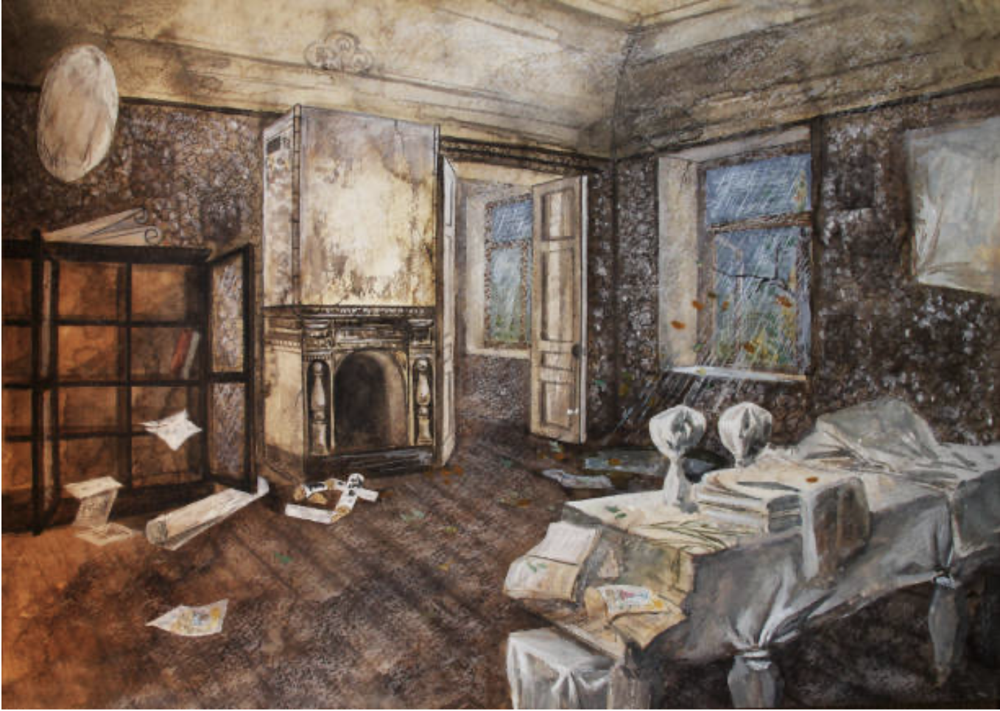
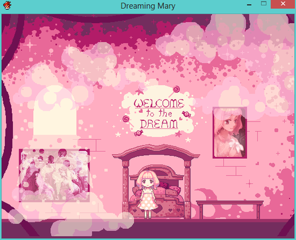
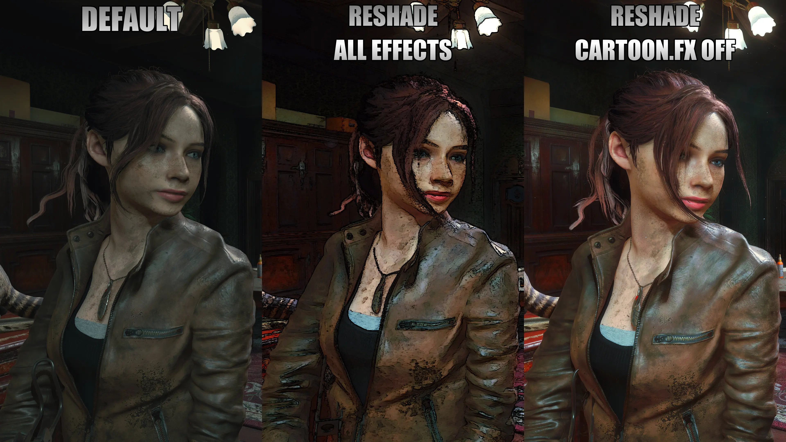
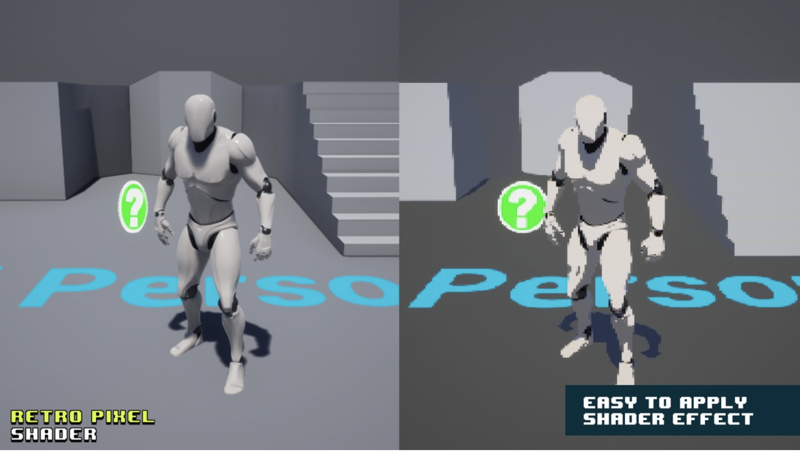

Team Members: Angela Marey Rodriguez, Anthea Guo, Jackie Lian, Karina Jin
Summary
In this project, we hope to transform traditionally terrifying horror game scenes into lighthearted, playful and visually cute experiences using custom shaders and model swaps. By injecting stylized effects like cel-shading, pixel shaders, and even character replacements (e.g., turning a terrifying boss into Pikachu), we aim to make horror games more approachable and playful for a broader audience.
Problem Description
Our project is changing horror games into cuter and more playful versions of the original horror games so it's not as scary :( and more attractive to a wider audience.
Why it is important: Our goal for this project is to make horror games more accessible to a broader range of players, regardless of their fear tolerance or visual limitations. Reshading a variety of horror titles will help demonstrate that games can be designed-or modified-to accommodate different needs without sacrificing artistic intent. For example, around 2-4% of the U.S. population is affected by amblyopia (often called "lazy eye"), and shader techniques for VR games like blurring one eye can potentially aid in strengthening the non-dominant eye through gameplay. Additionally, for colorblind players, adjusting hues to avoid problematic combinations like red and green, while emphasizing high-contrast pairings such as yellow and blue, can significantly improve visual clarity and reduce frustration. By exploring these changes, we hope to show that visual accessibility can be creatively integrated into even the most stylistically intense genres, like horror.
Challenges:
Setting up environment for injecting custom shaders: This is our first time modding and creating shaders, so one of our first challenges is setting up a reliable environment that allows us to test and inject custom shaders into existing horror games. This involves configuring tools like ReShade, RenderDoc, or custom DirectX/OpenGL wrappers, which can be difficult to get working properly without prior experience.
Implementing the shader itself which should achieve noticeable visual effects (ex. Cel/Toon shading, dreamy vibe, Pixel Shader...):
Writing custom shaders from scratch is especially challenging when aiming for distinct horror aesthetics while balancing cuteness and aesthetics, such as a grainy pixel look, eerie lighting, or stylized cel-shading. Because we're new to GLSL/HLSL and real-time rendering pipelines, translating visual ideas into working shader code that actually runs in-game takes a lot of trial and error.
Injecting compatible custom shader into different horror games: Making shaders work across different horror games like REPO or Resident Evil adds another layer of difficulty, especially when the games use different engines or rendering APIs (DirectX 9/11/12, OpenGL, Vulkan, etc.). Each title may require unique hooking methods or adjustments to make our shader compatible.
To solve it, we are looking into ReShade (a generic post-processing injector for games) for injecting our own custom shader into different horror games that support mods. We can also first try out shaders that are already built and learn from other people's modification of the code to inject these shaders before implementing our own.
After verifying that custom shaders can be successfully injected, we want to do further modifications on top of that to create more visual effects such as model swapping (replacing horror bosses with Pikachu).
Goals and Deliverables

Water Color haunted house

Cute game
Cel shading

Comparison of Shaders

Pixel Shading
Demo: We are working on an interactive shader injection system tailored for horror games such as REPO and Resident Evil. Our demo will showcase a real-time toggleable shader overlay within a live game environment, allowing users to switch between different visual effects like cel/toon shading, dreamy filters, and pixel-style rendering. The goal of the demo is to visually highlight how these custom shaders can drastically alter the mood and aesthetic of a horror game, using minimal user input.
Benchmarks:
We will measure and compare the frame rates before and after applying the shaders. This should take the same rendering time as before after changes are made in our side-by-side comparison.
Create 2 or more shaders on 2 or more games. A few options include:
Changing the hue
Changing the models (Changing the boss to Totoro)
Game options include: Resident Evil, Outlast, R.E.P.O
Questions:
How do different visual effects and shaders change the ambience and tone of the game?
Can different shaders change the way that audiences interact with the video games?
How similar are certain shaders implementations compared to others and which need additional post-processing effects to heighten their visual impact?
What your plan to deliver:
Baseline:
Implement out watercolor and toon shaders.
Implement pink filter (a filter that changes everything in the game scene into some shade of pink).
Able to inject our own custom shader into a chosen horror game.
Can see noticeable difference in game scenes using / not using reshade.
Compare and contrast the different effects that occur in different horror games based on the environment that is being manipulated.
Effect on objects/characters/lighting.
Some unexpected problems could be attempting to integrate these shaders into the horror games (the gaming engines could not be as accessible to add our shader into). Will be solved by finding horror games that are not newly released and have a large modding community (ex: resident evil, outlast). Can test our shaders in real-time by creating them using ReShader and referencing previous shades built within ShaderToy.
What you hope to deliver:
Expand on the completed shaders to support fancier effect (such as pink fog, hearts, anything that makes the scene dreamy etc).
Implement pixel shader.
Add model swapping to switch horror bosses with cute characters.
We'd also like to be able to deliver a side-by-side analysis of playing the game with and without our custom shader. We hope that this comparison will show the difference in atmosphere and visual impact before and after our Shader effects.
Schedule
Week 1: (4/4 - 4/11):
Learn ReShade and any necessary language to write the shader in.
Decide on the horror game we are going to play around with/inject shader into.
Finish setting up the environment for injecting custom shader.
Start implementing the watercolor and toon shader.
Week 2: (4/12 - 4/19):
Continue to work on and hopefully finish implementing one of the two shaders.
Test the completed shader in game scene.
Start model swapping.
Work on the milestone video.
Week 3: (4/20 - 4/27):
Finish milestone video demo (4/20).
Finish both shaders and test them in game scene.
Finish model swapping.
Week 4: (4/28 - 5/5):
Draft up and finish writing the final project writeup.
Prepare the final project presentation.
Resources
We will use Reshade to inject our shader into the games that we are focusing on. Using Reshade’s FX shading language based on HLSL, we will use our text editors to implement the shader and later inject these shaders into the game.